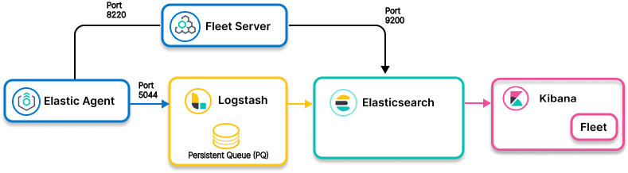

Elastic Agent to Logstash to Elasticsearch: Logstash Persistent Queue (PQ) for bufferingedit

- Ingest model
- Elastic Agent to Logstash persistent queue to Elasticsearch
- Use when
- Your data flow may encounter network issues, bursts of events, and/or downstream unavailability and you need the ability to buffer the data before ingestion.
Resourcesedit
Info on configuring Elastic Agent:
For info on Logstash plugins:
For info on using Logstash for buffering and data resiliency, check out this section in the Logstash Reference:
Info on Elasticsearch: